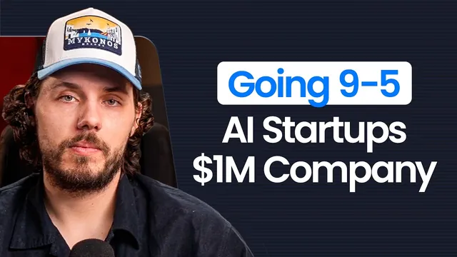

클로드 코드가 6개월 만에 내 사업을 죽였다

원본 영상 보기 →
- "AI를 쓰는 사람 vs 안 쓰는 사람"은 과도기 비교다
- 고가 서비스 사업의 경쟁자는 다른 에이전시가 아니라 구독형 소프트웨어일 수 있다
- 돈의 이동 방향을 보고 포지션을 정하는 것이 전략이다
한 줄 요약
AI 에이전트 구현 에이전시를 8년간 운영해온 Eugene Kadzina가, 앞으로 3~5년 안에 프리랜서·고가 서비스 사업은 AI 에이전트에 밀리기 쉬우니 돈이 모이는 더 큰 조직에 합류하는 편이 더 안전한 선택일 수 있다고 주장하는 영상이다.
전체 내용 정리
"9시~5시 근무가 온라인 사업보다 돈을 더 번다"는 훅이다
영상은 의도적으로 도발적인 주장으로 시작한다. 지금 판매할 것이 없고 유튜브 링크와 링크드인의 판매 링크도 모두 지웠으며, 회사 onebound.com도 신규 고객을 받지 않는다. 바빠서가 아니라 앞으로 어디로 갈지 의도적으로 멈춰 서 있는 상태다. 이 영상은 그 판단의 맥락을 공유하는 것이다.
8년간 아마존 FBA, 리뷰 에이전시, AI 에이전시를 거쳤다
벨라루스 출신으로 프로 하키 선수를 꿈꿨다가 접고 아마존 FBA를 시작했다. 모아둔 약 $7,000을 넣었지만 제품이 성공하지 못해 잃었고, 다시 더 성공한 아마존 사업가 밑에서 9-to-5로 일했다. 이후 아마존 판매자의 리뷰를 늘려주는 에이전시로 50만 달러 가까이 벌었지만 도박 중독으로 잃었다. 그 뒤 다시 직장에 다녔다. 2023년 중반 ChatGPT API가 열리자 AI로 방향을 틀고 챗봇 도구 Voiceflow로 시작했다. 영업과 영어가 약점이라 처음부터 브랜드가 필요하다고 판단했고, 그렇게 유튜브 채널을 시작했다. 이후 풀사이클 개발 에이전시 Quimple을 운영했고 WhatsApp·iMessage·Instagram에서 약속을 잡아주는 AI 약속 설정 서비스 onebound.com도 만들었다. Quimple은 수십만 달러(6자리 하단) 규모에 매각했다.
지금은 Instantly의 일일 쇼를 맡는 사실상 "회사 소속" 상태다
콜드메일 도구 Instantly와 파트너십을 맺어, 월~금 동부시간 낮 12시에 진행하는 go-to-market 일일 라이브 쇼를 전담한다. 뉴스 리뷰·인터뷰·교육을 섞은 형식으로 OpenAI에 인수된 TBPN을 본뜬 구조다. 구조상 파트너십이지만 Instantly 소속의 9-to-5 역할을 택한 것과 비슷하다고 보고, 최근 3년간 최고의 결정 중 하나라고 평가한다. onebound는 월 5자리 수를 내는 소수의 큰 고객만 유지하고 있고 키울 계획은 없다.
에이전트가 계속 발전하면 프리랜서의 레버리지는 사라질 수 있다고 본다
스스로 "전략적 비관론자"라 과하게 비관적일 수 있으니 반박해달라고 전제한다. 매일 쇼에서 만나는 성공한 창업자의 95%는 자신보다 훨씬 더 성공했지만, 지금 처음부터 고가 서비스를 시작한다면 마땅한 길이 보이지 않는다고 한다. 지금은 AI를 쓰는 프리랜서가 안 쓰는 사람을 이기지만, 다음 단계에서는 AI 에이전트 단독과 비교당한다. 그러면 회사가 사람에게 비용을 쓸 이유가 약해진다는 논리다. 온라인에서 일하는 엔지니어 약 5,000만 명이 3년 뒤 500만 명이면 된다고 가정하고, 디자이너까지 합치면 1억~3억 명의 온라인 노동이 영향을 받을 수 있다고 추정한다.
돈은 대형 AI 랩과 마이크로 SaaS로 이동할 가능성이 크다
기업이 과거에 에이전시에 맡기던 일을, 앞으로는 월 $100짜리 구독 서비스와 이를 감독하는 소수의 사람이 대신할 수 있다. 서비스 제공자 10곳 대신 AI 에이전트 소프트웨어 10개와 감독자 1~3명이 되는 구조다. 이렇게 되면 돈은 Anthropic·OpenAI·Google 같은 AI 랩이나 몇백만~수십억 달러 규모의 큰 회사, 그리고 특정 업무에 특화된 마이크로 SaaS로 이동한다. 마이크로 SaaS가 대형 모델보다 계속 우위를 지킬지는 확신이 없다고 한다. 사람에게 좋은 연봉과 책임 영역을 주고 일을 맡기려는 기업은 여전히 많다고 본다.
안정성과 예측 가능성을 위해 더 큰 조직에 합류하는 선택을 했다
월 $10,000이 모든 것을 충당한다면, 5~10배를 벌 수 있지만 불안정한 모델보다 예측 가능한 월 $10,000을 택하겠다는 성향이다(금액은 순수 예시라고 강조). Instantly 합류로 자본·인력·안정성을 얻어 혼자 5년 걸릴 성장을 2년 안에 달성할 수 있다고 본다. 대신 수십억 규모 엑시트 가능성은 포기한다. 이런 조직을 찾는 일도 어렵지만, 맨땅에서 사업을 시작해 고객을 모으고 납품하는 것보다 더 어렵지는 않다고 본다. 억만장자가 목표라면 소프트웨어를 만들어 엑시트하거나 투자를 받는 길뿐이지만, 가족 부양과 충분한 생활과 일의 보람이 목표라면 큰 조직에 합류하는 쪽이 대다수 시청자에게 더 나은 베팅이라는 결론이다.
핵심 인사이트
- "AI를 쓰는 사람 vs 안 쓰는 사람"은 과도기 비교다: 지금은 AI를 쓰면 이기지만, 다음에는 AI 단독과 비교된다. 내 가치가 감독·책임·관계 쪽에 있는지 점검해야 한다.
- 고가 서비스 사업의 경쟁자는 다른 에이전시가 아니라 구독형 소프트웨어일 수 있다: 월 $100 구독 + 감독자 1명이 서비스 제공자 10곳을 대체할 수 있다는 구조 변화다.
- 돈의 이동 방향을 보고 포지션을 정하는 것이 전략이다: 큰 조직에 합류하는 것이 "포기"가 아니라 안정성과 속도를 사는 선택이 될 수 있다.
- 본인도 반박을 환영한다고 밝힌 "비관적 가설"이다: 확정된 예측이 아니므로 그대로 따르기보다 자기 업종에 대입해 검증해야 한다.
오늘 당장 해볼 것
- 내가 제공하는 서비스를 "월 $100 AI 구독 + 감독자 1명"으로 대체할 수 있는지 항목별로 적어보고, 대체되기 어려운 부분(신뢰·책임·관계)을 따로 표시한다.
- 이번 달 매출이 고객 몇 곳에 쏠려 있는지 정리해, 한두 곳이 빠졌을 때 버틸 수 있는 기간을 계산해본다.
- 협업·제휴·소속 형태로 합류할 만한 조직 후보를 3곳 적고, 내가 줄 수 있는 것과 받고 싶은 것을 한 줄씩 써본다.